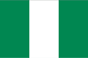

About Me
My name is Israel The Beloved one of the disciples of Jesus Christ and an aspiring software engineering enthusiasist. I had being into Education and Farming for several years and i am passionate about what I do and enjoy adventure during my leisure time.
Lagos,Nigeria
Lagos is a state in the Western Nigeria. Nigeria is located in West Africa bordered by Republic of Benin to the west, Niger to the north, Cameroun to the east and atlantic ocean in the south, which enhances excellent trade route. Nigeria is the most populous black nation and the giant of African with the largest GDP. it is rich in cultural diversity with about 250 ethnic groups and over 500 languages, the main ethnic groups are Igbo, Hausa and Yoruba.